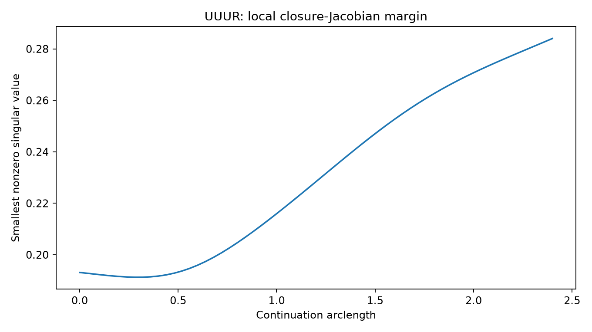
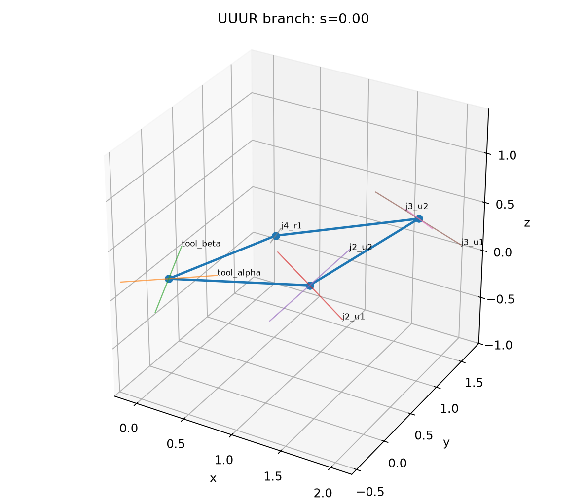
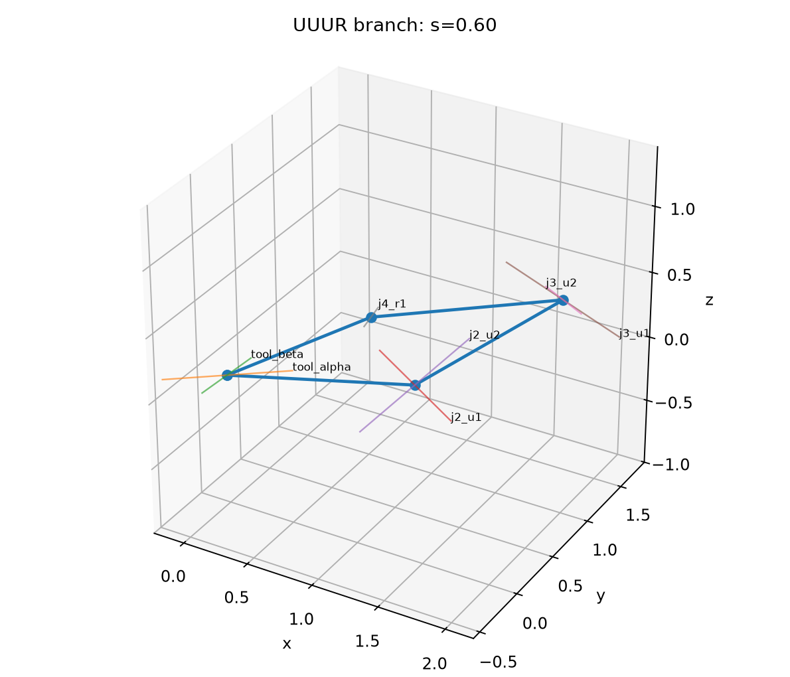
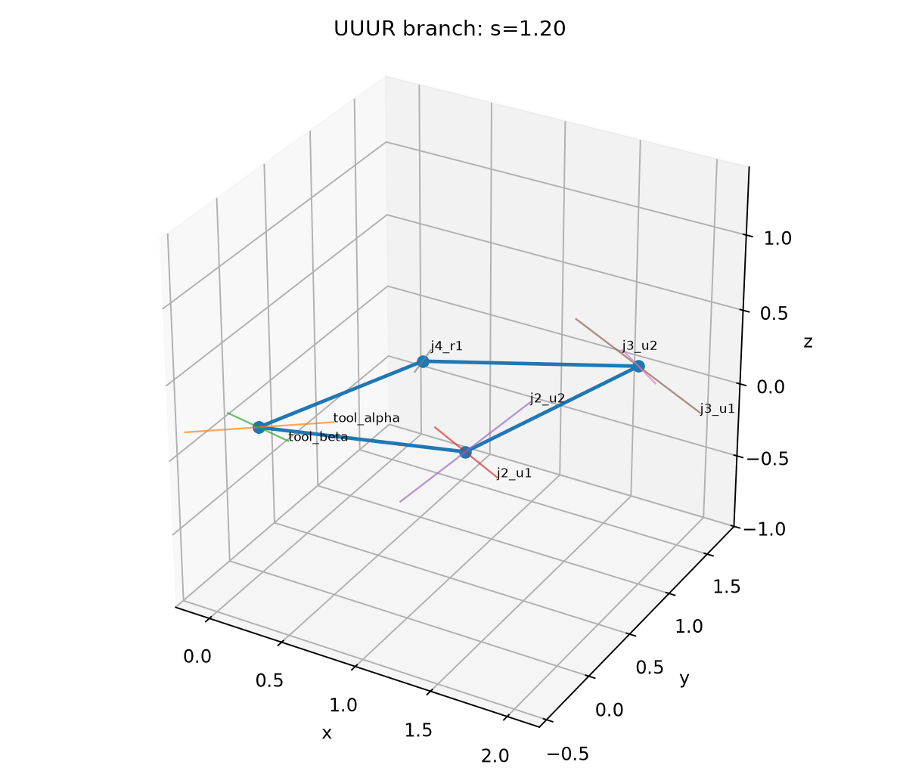
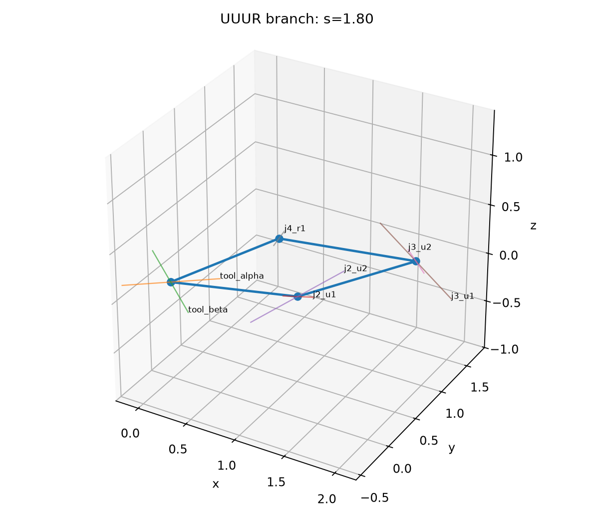
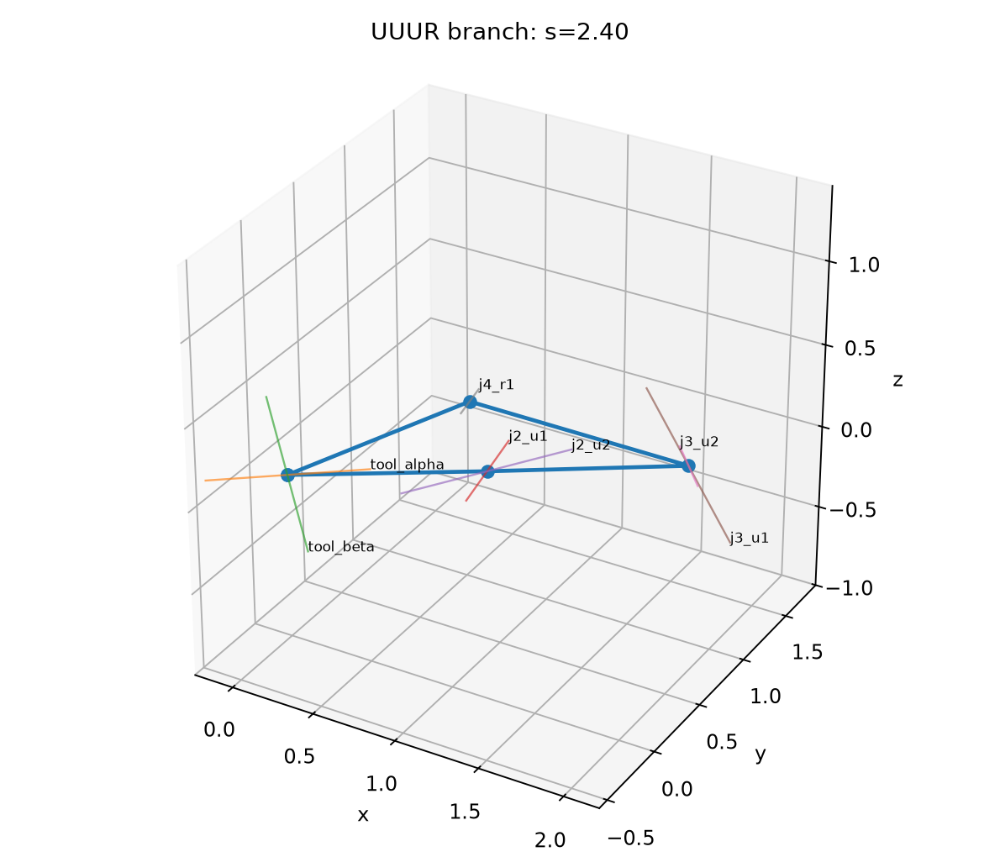

STATUS: local one-dimensional closure branches only. No crank, winding, or dexterity classification is made in V03.
V03 uses only V02B physical geometry. Every R/U/S family is expanded internally into seven ordered revolute solver coordinates. The same six-constraint closure kernel is used for all six ordered families.
Expected regular result: 7 scalar coordinates, closure Jacobian rank 6, nullity 1.

| Family | Coordinates | ||r(0)|| | Rank | Nullity | sigma_min+ | Status |
|---|---|---|---|---|---|---|
| UUUR | 7 | 0.000e+00 | 6 | 1 | 1.931e-01 | PASS |
| UURU | 7 | 0.000e+00 | 6 | 1 | 6.474e-02 | PASS |
| URUU | 7 | 0.000e+00 | 6 | 1 | 4.507e-01 | PASS |
| USRR | 7 | 0.000e+00 | 6 | 1 | 2.112e-01 | PASS |
| URSR | 7 | 0.000e+00 | 6 | 1 | 3.818e-01 | PASS |
| URRS | 7 | 0.000e+00 | 6 | 1 | 2.516e-01 | PASS |
Pseudo-arclength predictor/corrector continuation follows the local null direction of the closure Jacobian. The plots below are diagnostics of a real closure branch segment; they are not yet a full-cycle continuation.









| Family | Points | Final arclength | Converged fraction | Max closure residual | Min sigma_min+ |
|---|---|---|---|---|---|
| UUUR | 61 | 2.400 | 1.000 | 8.854e-15 | 1.913e-01 |
| UURU | 61 | 2.400 | 1.000 | 8.930e-11 | 5.161e-02 |
| URUU | 61 | 2.400 | 1.000 | 4.886e-15 | 4.507e-01 |
| USRR | 61 | 2.400 | 1.000 | 2.159e-12 | 1.078e-01 |
| URSR | 61 | 2.400 | 1.000 | 1.978e-12 | 1.537e-01 |
| URRS | 61 | 2.400 | 1.000 | 1.573e-14 | 2.516e-01 |
tool_alpha and tool_beta are both recorded from one mechanism solve; the mechanism is not solved twice.